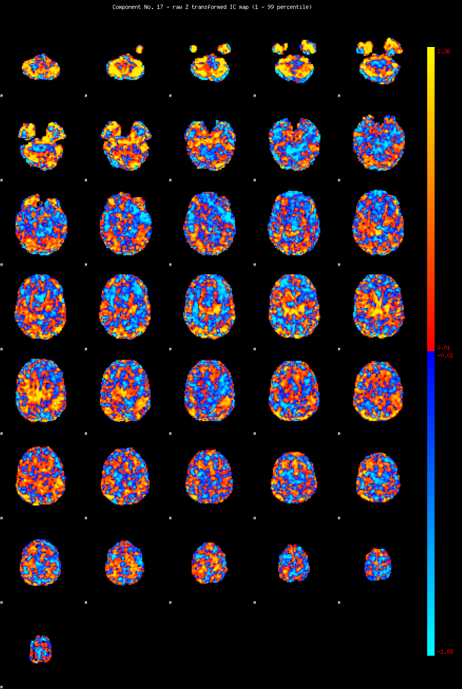
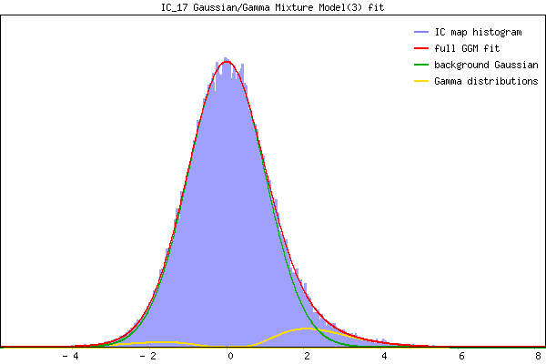

IC_17 Mixture Model fit
Means : 0.000000 2.493481 -2.109438
Vars : 1.000000 1.026383 0.972520
Prop. : 0.928805 0.056419 0.014776
This page produced automatically by MELODIC Version 3.15 - a part of FSL - FMRIB Software Library.